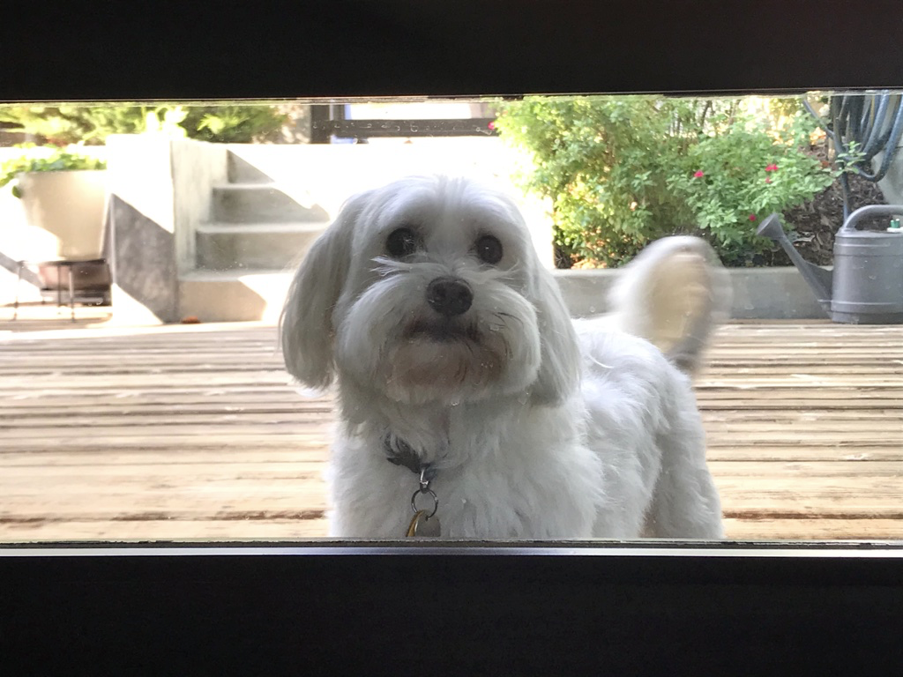
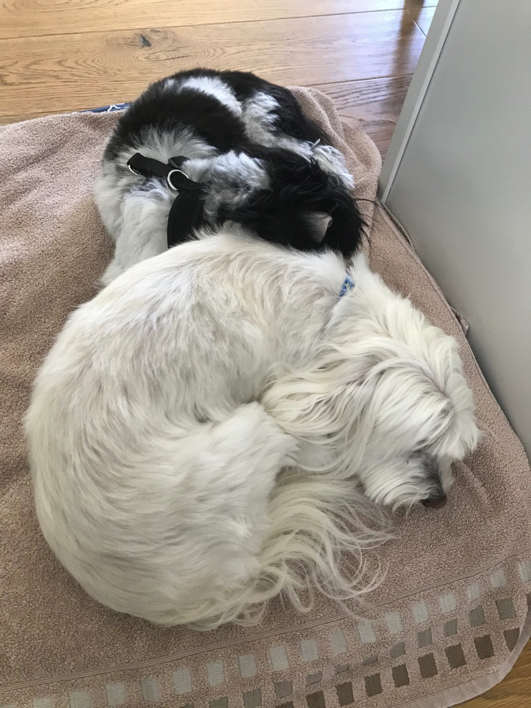
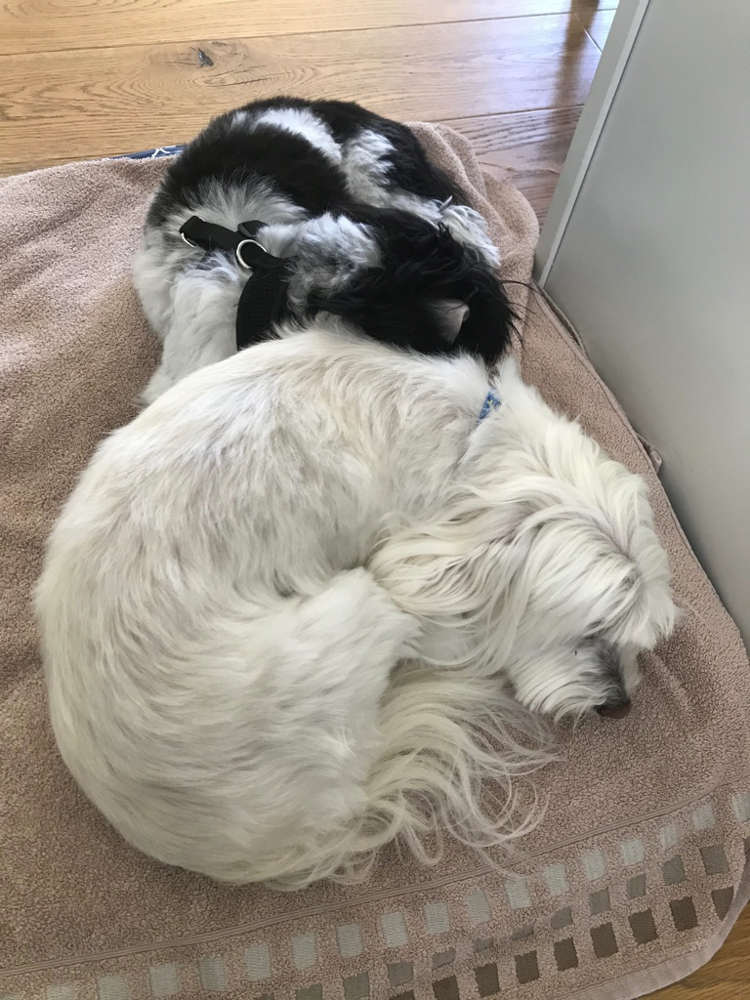

Pappy

Pappy is a 7 year old morkie. Most days he prefers to spend it laying around the house in his various favorite spots. Most of the time you can find him lying in his bed. He loves going with walks, but still hasn’t figured out how to approach other dogs without scaring them off. He loves his family and loves to keep intruders away even for his size.
He also enjoys playing with his favorite basketball. He loves pushing it around, scratching it, or even talking with it. He also loves his little stuffed animal too. Pappy also loves to be scratched and will ask you to keep scratching until he is happy.
Photo Gallery


Likes
- Taking naps with his paws in the air
- Getting scratches or belly rubs
- Any kind of dog treats
Molly

Molly is an 18 year old calico cat. She prefers spending her days lounging on the couch or curled up sleeping over a vent (or anything warm). Occasionally, she’ll go outside and attempt to hunt birds or rats (sometimes successful which is terrifying).
Molly’s favorite habit is to brush against people’s legs, especially during dinner when everyone is seated around a table. She’s an attention seeker, always meowing to get as many pets and head rubs as she possibly can.
Photo Gallery


Likes
- Scratching couches
- Sunbathing
- Brushing against people's legs
Bacon Q Dog

Bacon Q. Dog is a 9yr old labradoodle. He prefers to spend his days lounging among the three different beds/couches that his family has gifted him. He enjoys a walk or two around the neighborhood, as long as he can pretend that he doesn't see any of the other animals to avoid the embarrassment of not wanting to admit he has no wolf-like skills in chasing them.
At night just as the rest of the family is ready to relax, Bacon suddenly wants to release all of his energy. He will place his toys on a mini couch and frantically drag the couch around, giving his toys "a ride." There is also a lot of rolling. Lots and lots of rolling.
Photo Gallery


Likes
- Belly rubs
- Playing tug-of-war
- Sneaking onto the couch
MiaoMiao

MiaoMiao is the best cat in the world, extremely social with other, and vigilant against strangers. Oftentimes you can find her running around the house looking for things to eat. If she consumed anything other than cat food, she immediately throws up.
She is chill and chirpy. Loves to play with anything other than professional cat toys. Also loves sitting on keyboards and joining Zoom calls.
Photo Gallery


Likes
- Birds
- Ping-pong Balls
- Sleeping
Nickels
Nickels was adopted from Ohio in 2010. He turned 13 years old in June 2023, which he celebrated with a Taylor Swift themed birthday party. Nickels often travels with his family; he has been to over ten states. He has lived in Illinois and California. Nickels is a very unique dog- he is allergic to meat. His favorite word is “present.” His one true joy is receiving and opening gifts with his family.
In 2020, Nickels’ brought home a new dog: Socks. Socks is potentially the villain in Nickels’ life. He destroys Nickels’ favorite toys and is highly allergic to peanut butter, which means Nickels now rarely gets his favorite treat! However, when you find them sharing a dog bed, you wonder if the sibling rivalry is all a facade.
Photo Gallery


 

Likes
- Plush toys
- Wrapping paper
- Dog parks